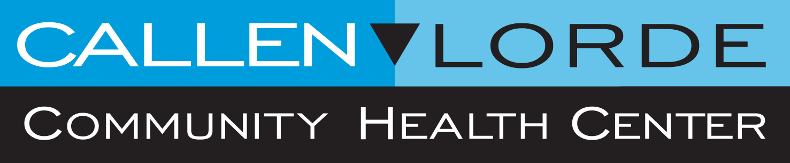

PHASE 1
| Date | Goal |
|---|---|
| 2/12 | Finalize work plan, send out interview inquiry, conceptualize website design |
| 2/19 | Conduct interviews, work on website design |
| 2/26 | Conduct interviews, work on website design |
| 3/5 | FINAL: All interviews completed, research finished, website concept fully designed |
RESULTS
Callen-Lorde
-Interviewed Callen-Lorde's Community Health Education Coordinator, Rachel Bookbinder. The main takeaways included...
-Mission: Provide health care and related services targeted to New York's LGBTQ+ communities regardless of ability to pay.
-Specific focus on transgender, HIV, POC, and low-income populations, particularly around the Bronx area
-Health Outreach to Teens (HOTT)
-Most of the health services are in person, due to a focus on privacy and security
-Have an indepedent call center run by Callen-Lorde's Patient Administrative Services (PAS)
-Doesn't want to depend on grassroots contributions, wants consistent government support
-Digital Services: Website, Facebook, Instagram, Twitter, Hotline for calling ((212) 271-7200)
Questions for the future...
-Who is responsible for answering inqueries that directly message Callen-Lorde's social media profiles (Facebook, Instagram, Twitter)?
-What are the protocols for responding to that person?
-How are people trained in PAS? What do they need to do in order to be certified?
-Why are the social media profiles and the website patterned so differently?
-What's the purpose of both?
-How does Callen-Lorde take youth populations into consideration in design and execution of their plans?
Links to Sites
Planned Interview Contacts
Callen-Lorde
-Caitlin Quigley (Director of Communications)
-Samantha Kuperberg (Director of Patient Administrative Services)
-Timothy Marq Tobias (Outreach Project Coordinator for HOTT)
Other Organizations
-GLAAD
-Tate Benson, GLSEN
-Dale Bernstein, PFLAG
Future Plans
Purpose of the Website
Interviews
Annual Reports
Research